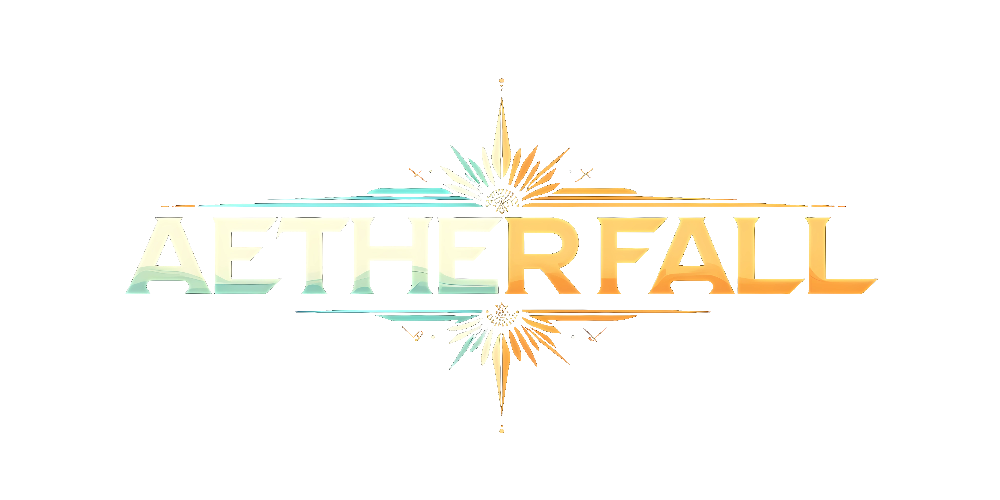

When the Aether Fell, Everything Changed.
The Veil thinned. Magic poured through. The Engine woke in response. Now the world is caught between two forces that refuse to share — and you're the one standing in the middle with a sword, a revolver, and a very bad feeling.
The Veil
Deep in the wild zones, the air hums. Compasses spin. Stray cats won't cross the threshold. Here the Veil is thin — the boundary between the mundane world and something vast and ancient beyond it. Casters draw Aetheric power from this place. Spells come easy, burning bright and terrible. Technology? Your revolver clicks empty. Your radio screams static. The Veil doesn't care about your engineering degree.
The Engine
In the Galvanic zones — the great factories, the experimental weapons labs, the resonance foundries — the Engine hums louder than the Veil. Arc guns crackle. Voltaic generators pulse. Here, Galvanic devices run flawlessly and spells wither on the tongue. Whether the Engine is a conscious force, nature's immune response, or just physics — nobody knows. People debate it. Cults form around the question.
The Bedrock
A steel blade works everywhere. A horse doesn't care about the Aether or the Engine. In a world being pulled in two directions, the only truly reliable things are muscle, steel, and nerve. Smart adventurers carry a sword and a gun — because you never know which one will betray you first.
The Stories You'll Tell
Your party tracks a missing scholar into the forest north of Ashwick. The trees are wrong — too tall, too still. Your compass died an hour ago. The caster in your group is grinning. She can feel the Veil thinning with every step. Her spells are building to something spectacular. Your revolver, meanwhile, is getting heavier and less convincing by the minute.
A factory district. Pipes hissing. Somewhere below street level, a weapons lab is building something that shouldn't exist. Your Galvanic gunner's arc gun is singing in its holster — the Engine is strong here. Your caster can barely light a candle. You'll need to get in with steel and nerve and whatever exotic hardware you can beg, borrow, or steal.
Smoke, saxophone, and something wrong under the floorboards. The balance is neutral here — for now. Your scholarly caster is leafing through her spellbook under the table. The thugs by the door have revolvers and bad intentions. When the first spell flies, the balance will tip — and their guns will start getting twitchy. Seven counts of combat time. Every choice matters.
Three days into the uncharted interior. The map is wrong. The Aetheric readings are off the scale. Something ancient moved through here and left the landscape changed. Your party carries swords, a scholarly caster, a Galvanic lance, and enough provisions for a week. You'll need all of it. The stories from the last expedition that came this way weren't stories anyone wanted to hear.
The System
One core system. d100 roll-under. Everything else flows from there.
Scholarly casters learn specific spells from any of six schools. Precise, controlled, deliberate. Wild casters channel every spell in their schools — but the dice decide how much power comes through. Both paths risk backlash. More power drawn means more chance the magic burns you back.
Every spell cast pushes the environment toward the Aether. Every Galvanic weapon fired pushes it back. The balance shifts with every action — making your caster's spells stronger while your gunfighter's revolver gets less reliable. Coordination isn't optional. It's survival.
No hit-point sponges. Every wound makes you worse at everything — the death spiral means getting hurt forces real decisions. Draw your sword or talk your way out? The mechanics care. The timing track means every action costs time, and faster characters see what you're doing before they commit.
Arc guns that arc lightning between targets. Force blades that shear through plate armor. A Galvanic lance that fires a beam clean through two people. Each weapon is unique — with its own personality, abilities, and spectacular ways to malfunction.
No minis, no maps, no grids. A rulebook, character sheets, and a handful of dice around a table. The entire game plays in the imagination. One page of quick reference covers 90% of play.
Concrete mechanical anchors that the GM interprets flexibly. The rules give you solid ground to stand on. The table decides what happens when the ground starts moving.
Design Philosophy
Players are good people doing good things in a world with real evil. The darkness is something to stand against, not wallow in.
Depth emerges from decisions, not complexity. No bloat, no subsystems for every edge case. One cheat sheet runs the game.
Combat is dangerous. The death spiral means getting hurt changes the math. Think before you fight.
Magic is new, poorly understood, and feared. It inspires awe in equal measure. Power always has a price.
d100 roll-under, always. No special-case subsystems. Everything works the same way, from swordfights to spellcasting to social manipulation.
Concrete mechanical anchors for the GM to interpret. Solid floors, flexible ceilings. Trust the people at the table.
Begin
The full rules reference is available now. Everything you need to build a character, cast a spell, and survive your first firefight.